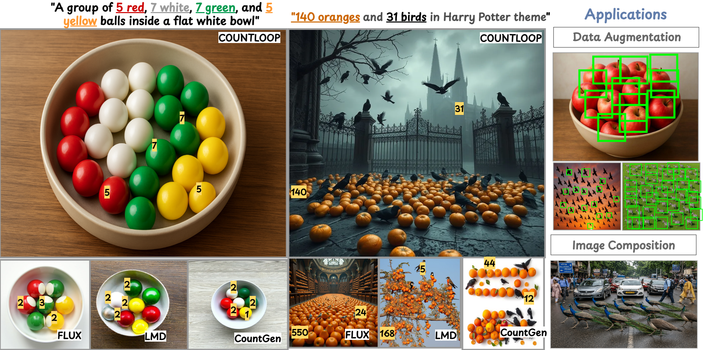
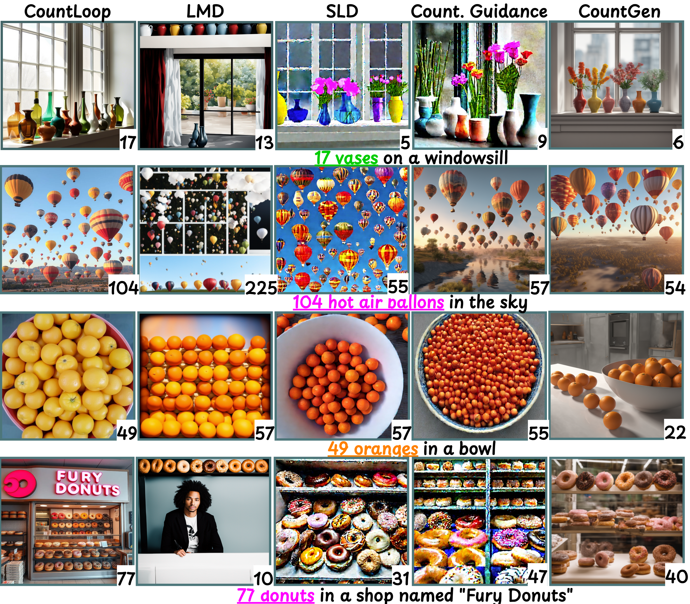
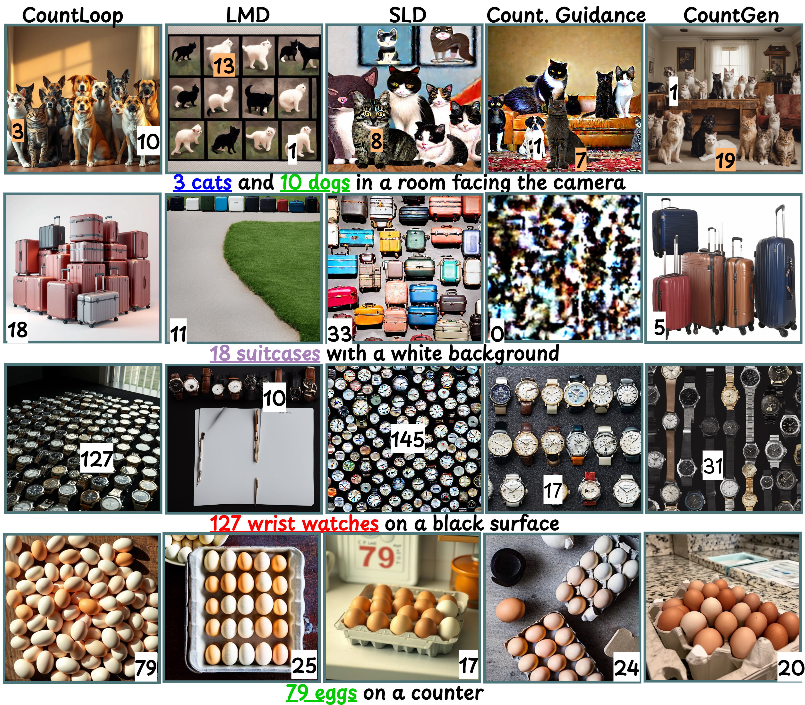
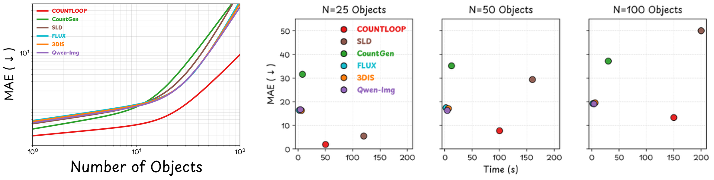

CountLoop: Training-Free High-Instance Image Generation
via Iterative Agent Guidance
TL;DR: CountLoop is a training-free framework that achieves structured instance and count control using iterative, structured feedback. Our method alternates between synthesis and evaluation, using a VLM-guided agent as both a layout planner and a critic.

CountLoop generates high-cardinality scenes with precise count alignment and clear object separation. Given prompts with explicit per-class counts, CountLoop produces images whose detected counts show substantially improved alignment with targets, even at high cardinalities (e.g., 140 oranges and 31 birds), where competing methods suffer from count saturation, semantic leakage, and grid-like layouts. Unlike prior approaches, CountLoop requires no retraining: a VLM-guided planning graph structures the layout, instance-driven attention masking prevents attribute leakage, and a Critic VLM iteratively refines the scene until the count and quality criteria are met. Count-faithful synthesis facilitates practical applications: (a) augmenting object-counting datasets with high-instance scenes, and (b) compositional image generation in complex out-of-distribution scenarios.
Abstract
Diffusion models excel at photorealistic synthesis but struggle with object count fidelity, especially in high-density settings. We introduce CountLoop, a training-free framework that achieves structured instance and count control through iterative, structured feedback. Our method alternates between synthesis and evaluation: a VLM-based planner generates structured scene layouts, while a VLM-based critic provides explicit feedback on object counts, spatial arrangements, and visual quality to refine the layout iteratively. Instance-driven attention masking and cumulative attention composition further prevent semantic leakage, ensuring clear object separation even in densely occluded scenes. Evaluations on COCO-Count, T2I-CompBench, and two newly introduced high instance benchmarks show that CountLoop reduces counting error by up to 57% and achieves the highest or comparable spatial quality scores across all benchmarks, while maintaining photorealism.
Pipeline Overview

CountLoop operates in three stages: (1) A Design VLM interprets the prompt to produce realistic layouts. (2) These layouts guide style-consistent image generation via a cumulative attention mechanism. (3) A Critic VLM assesses the output for counting accuracy and aesthetic quality, providing structured feedback to refine both the layout and prompt. This iterative loop runs until a target quality score is reached, enabling complex, high-instance images without retraining the diffusion model.
Visual Results

CountLoop consistently avoids semantic drift, grid artifacts, and count inaccuracies that outperform competitors for high-instance image generation. It scales reliably to 100+ instances per image.
Qualitative Comparison with State-of-the-Art Methods
Click any image to inspect fine details and detections in full high-resolution.
Part 1: Single-Category & High-Cardinality Scenes
5 Methods • 4 Diverse Prompts Click to enlarge
Part 1: Single-category scenes across scaling cardinalities. Evaluating CountLoop (Ours) against LMD, SLD, Counting Guidance, and CountGen across: (1) "17 vases on a windowsill", (2) "104 hot air balloons in the sky", (3) "49 oranges in a bowl", and (4) "77 donuts in a shop named Fury Donuts". CountLoop faithfully satisfies requested counts and natural layouts without the severe under-generation, count saturation, or artificial grid clustering seen in prior approaches. Detected counts are indicated at the bottom right of each panel.
Part 2: Multi-Category Compositions & Dense Arrays
5 Methods • 4 Challenging Prompts Click to enlarge
Part 2: Multi-category compositions and dense, occluded arrays. Evaluating across: (1) "3 cats and 10 dogs in a room facing the camera", (2) "18 suitcases with a white background", (3) "127 wrist watches on a black surface", and (4) "79 eggs on a counter". Competing methods suffer from severe attribute leakage (e.g., dog textures bleeding into cats) or spatial collapse (e.g., watches overlapping or disappearing). CountLoop retains strict object separation and accurate per-class cardinality even under dense occlusion.
Benchmarks & Evaluation
We evaluate on four benchmarks spanning instance count and compositional difficulty: COCO-Count, T2I-CompBench, and newly proposed CountLoop-S and CountLoop-M.

Figure 7: Counting difficulty rises with instance count (left); runtime curves echo the same ordering across cardinalities (right). (a) MAE vs. Number of Objects: As target instance counts grow from 1 to 100+, baseline diffusion models experience steep error growth due to count saturation and spatial collapse. CountLoop sustains substantially lower Mean Absolute Error across all cardinalities. (b) MAE vs. Generation Time: Evaluated at \(N=25\), \(50\), and \(100\) objects, runtime curves illustrate that CountLoop achieves Pareto-optimal counting accuracy with efficient iterative critic refinement.
Counting and Aesthetic Quality Across Four Benchmarks
| Family | Model | Single Category | Multi Category | ||||||||||
|---|---|---|---|---|---|---|---|---|---|---|---|---|---|
| COCO-Count | T2I-CompBench | CountLoop-S | CountLoop-M | ||||||||||
| MAE↓ | Ex.↑ | Spatial↑ | MAE↓ | Ex.↑ | Spatial↑ | MAE↓ | Ex.↑ | Spatial↑ | MAE↓ | Ex.↑ | Spatial↑ | ||
| T2I | SDXL | 2.37 | 25% | 0.38 | 2.72 | 25% | 0.75 | 29.96 | 0% | 0.63 | 9.89 | 10% | 0.55 |
| FLUX | 1.40 | 55% | 0.53 | 1.48 | 55% | 0.78 | 17.47 | 4% | 0.65 | 9.62 | 12% | 0.58 | |
| SD 3.5 | 1.10 | 55% | 0.46 | 1.58 | 40% | 0.76 | 21.81 | 0% | 0.64 | 8.40 | 16% | 0.56 | |
| SDXL-Turbo | 2.50 | 25% | 0.23 | 3.76 | 10% | 0.53 | 51.14 | 0% | 0.39 | 9.95 | 10% | 0.37 | |
| Counting Guidance | 1.68 | 40% | 0.63 | 3.90 | 10% | 0.56 | 42.49 | 0% | 0.47 | 8.43 | 16% | 0.41 | |
| L2I | LMD | 3.09 | 10% | 0.24 | 5.56 | 2% | 0.73 | 16.62 | 5% | 0.66 | 6.34 | 25% | 0.64 |
| MIGC | 1.83 | 40% | 0.36 | 2.96 | 25% | 0.65 | 17.54 | 4% | 0.65 | 6.28 | 25% | 0.62 | |
| CountGen | 1.88 | 40% | 0.61 | 5.22 | 2% | 0.75 | 34.44 | 0% | 0.72 | 6.46 | 24% | 0.69 | |
| InstanceDiffusion | 1.77 | 40% | 0.40 | 2.83 | 25% | 0.68 | 16.07 | 5% | 0.74 | 6.11 | 26% | 0.66 | |
| 3DIS | 1.56 | 40% | 0.42 | 2.56 | 25% | 0.70 | 14.55 | 6% | 0.76 | 5.75 | 27% | 0.69 | |
| Agentic | GenArtist | 1.50 | 40% | 0.45 | 1.50 | 40% | 0.70 | 32.47 | 0% | 0.60 | 4.93 | 11% | 0.57 |
| SLD | 1.15 | 55% | 0.70 | 1.44 | 55% | 0.77 | 29.65 | 0% | 0.75 | 3.74 | 20% | 0.65 | |
| RPG | 1.28 | 55% | 0.60 | 1.47 | 55% | 0.75 | 31.85 | 0% | 0.70 | 4.34 | 15% | 0.62 | |
| Qwen-Image | 1.04 | 55% | 0.58 | 1.26 | 55% | 0.77 | 17.30 | 4% | 0.74 | 6.92 | 22% | 0.66 | |
| Ours | CountLoop (w/ GDINO critic) | 0.45 | 85% | 0.93 | 1.23 | 55% | 0.79 | 7.59 | 20% | 0.93 | 2.13 | 33% | 0.73 |
| CountLoop (w/ CountGD++ critic) | 0.32 | 85% | 0.98 | 0.87 | 70% | 0.95 | 5.33 | 29% | 0.97 | 1.02 | 42% | 0.85 | |
BibTeX Citation
@article{mondal2026countloop,
title = {CountLoop: Training-Free High-Instance Image Generation via Iterative Agent Guidance},
author = {Mondal, Anindya and Nag, Sauradip and Banerjee, Ayan and Llados, Josep and Zhu, Xiatian and Dutta, Anjan},
journal = {Transactions on Machine Learning Research (TMLR)},
year = {2026}
}License
We release our work under the Open RAIL-S License, which prohibits exploitative applications through robust contractual obligations and liabilities. We want to encourage users to exercise reasoned scepticism towards any downstream deployment that enables the monitoring of individuals without proper legal safeguards.